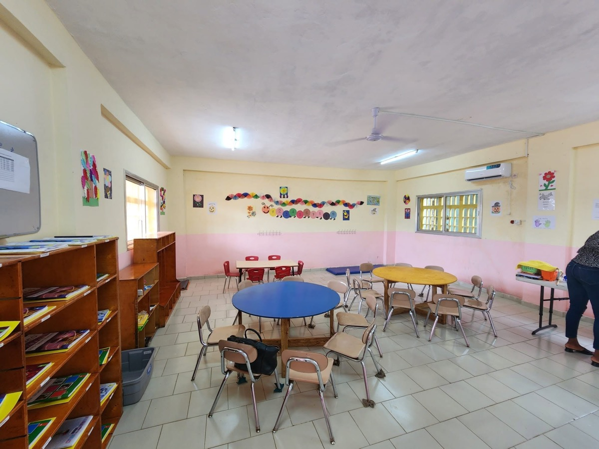

Identité
Acte de naissance, photos d'identité et informations parent ou tuteur.
Admissions
Les inscriptions et demandes d'information se font directement auprès de l'école. La procédure détaillée sera confirmée avec l'administration.
Premiers échanges
Pour une demande d'information, les familles peuvent contacter l'école par email, Messenger ou téléphone.
Envoyer un message avec le nom de l'élève et le niveau souhaité.
Maternelle, primaire ou collège, avec la classe visée si elle est déjà connue.
Confirmer les places disponibles, les frais, les dates et les documents attendus.

Documents
La liste officielle reste à confirmer avec l'école. Ces documents sont indiqués comme base de discussion.
Acte de naissance, photos d'identité et informations parent ou tuteur.
Bulletins, dossier scolaire ou informations sur la classe précédente selon le niveau.
Un rendez-vous ou échange avec l'administration pourra confirmer les étapes.